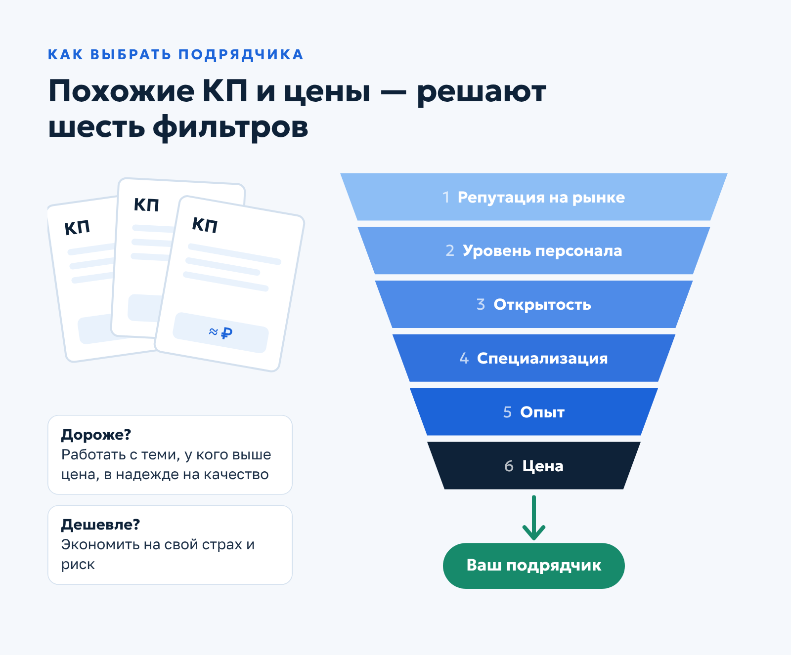
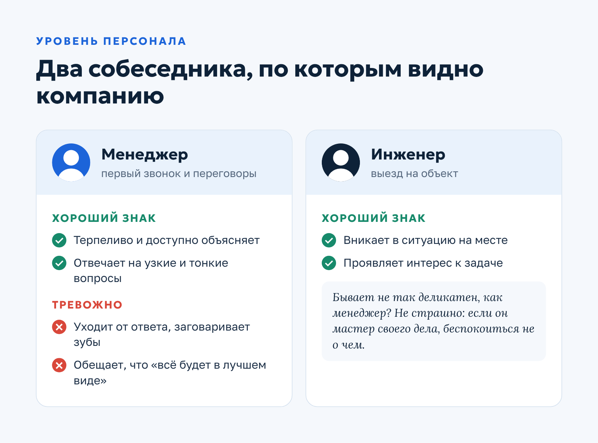
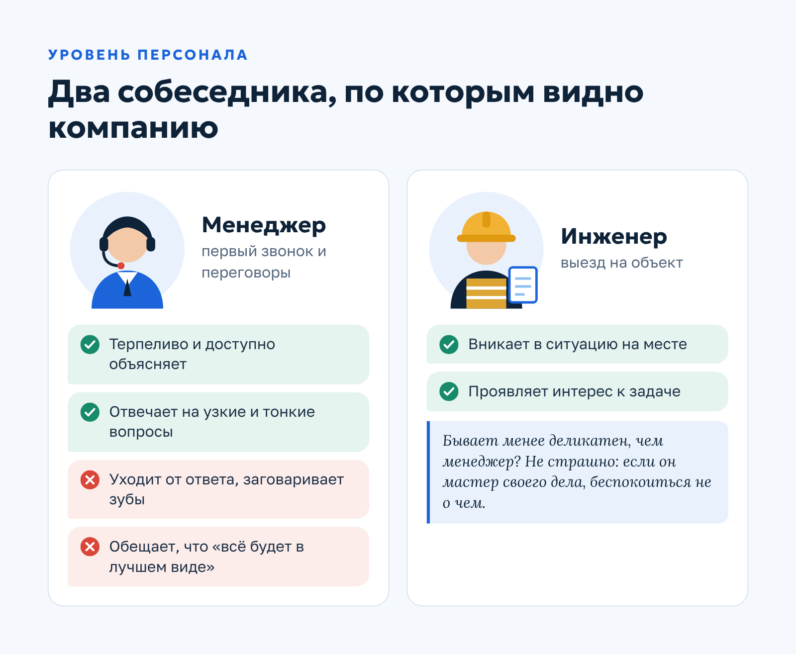
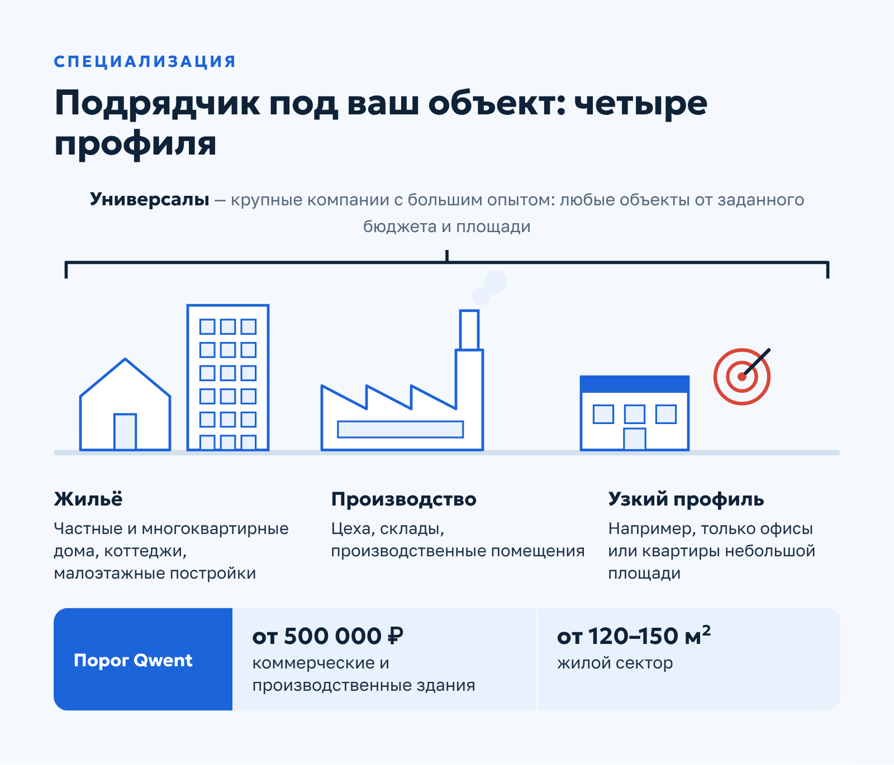

Qwent · Статья · контент-маркетинг
Статья для инженерной компании: как выбрать подрядчика для монтажа инженерных систем
О заказчикеQwent — инженерная компания из Москвы (сайт ceds.ru): монтаж и обслуживание систем вентиляции и кондиционирования.
Задача
Помочь заказчику отличить надёжного подрядчика по монтажу инженерных систем от случайного, когда коммерческие предложения и цены почти одинаковые.
Решение
Собрала критерии выбора: репутация в сети, уровень персонала, открытость, специализация, опыт и ценовая политика. Каждый критерий подан через вопросы, которые читатель задаёт себе сам, а итог сведён в чек-лист.
Результат
Опубликована в блоге Qwent в августе 2021 года. Статья продаёт Qwent через доверие: читатель сам приходит к критериям, которым компания соответствует, включая её порог по объёму объектов.
Как правильно выбирать компанию для монтажа инженерных систем
Надёжный подрядчик при монтаже инженерных коммуникаций — залог качества работ, экономии денег и нервов. На рынке появляется всё больше компаний, которые специализируются на установке систем вентиляции, кондиционирования и дымоудаления. Их коммерческие предложения максимально похожи, а цены на один и тот же вид работ практически не отличаются.
Как определиться? Работать с теми, у кого дороже, в надежде на качество? Или экономить на свой страх и риск? В этой статье разбираем основные критерии, которые помогут выбрать ответственного подрядчика.
Репутация на рынке
Мы живём в век интернет-технологий, и при выборе делового партнёра можно полагаться не только на сарафанное радио. Прежде чем сделать первый звонок, оцените, какой имидж компания сформировала в цифровой среде. В этом поможет короткий чек-лист из четырёх пунктов.
Сайт
Собственный сайт — уже хороший знак. Но присмотритесь к нему внимательнее. Ресурс морально устарел, им неудобно пользоваться, нужную информацию сложно найти, а на телефон горячей линии вот уже пять минут никто не отвечает? Это пример не только плохого юзабилити, но и в целом не самого прогрессивного отношения к делу.
Напротив, если сайт инженерной компании приятно удивил качественной типографикой, удобной навигацией, разделами с отзывами, кейсами и фото объектов, блогом с полезными статьями, есть все основания полагать, что перед вами надёжный подрядчик.
Реквизиты и отзывы
Проверьте реквизиты — как правило, они размещены в разделе «Контакты» — и оцените выполненные работы. Отзывам на сайте самой компании не всегда стоит доверять: они могут быть необъективными.
Используйте альтернативные ресурсы. Найдите карточку организации на Яндекс Картах и посмотрите, что пишут клиенты там. Если отзывов нет, возможно, компания недавно работает на рынке. Что-то насторожило? Это повод присмотреться к другому подрядчику.
Реклама
Оцените маркетинговую стратегию компании и её рекламную активность. Почему вы решили обратиться именно сюда? Нашли сайт в топе поисковой выдачи? Увидели билборд в городе? Услышали объявление на радио или ТВ?
Всё это следствия довольно внушительных затрат на маркетинг. Если организация выделяет на рекламу большие бюджеты, значит, она может себе это позволить, не испытывает недостатка в клиентах и не планирует уходить с рынка.
Соцсети и YouTube
Важность SMM осознали даже в самых консервативных отраслях. Если у подрядчика есть активные группы в соцсетях, где регулярно публикуют новости, интересные статьи, фото сданных объектов и проводят конкурсы для подписчиков, это ещё одно подтверждение: компания существует, и в ней работают реальные люди.

Многие подрядчики ведут и собственные каналы на YouTube, где размещают видеоотчёты с завершённых объектов. Ролик о сданном объекте покажет уровень работ нагляднее любого буклета, так что не поленитесь посмотреть пару видео до звонка.
Уровень персонала
Первый человек, с которым вы будете общаться, — менеджер по продажам. Оцените, насколько вам комфортен диалог с ним, и не бойтесь спрашивать, если что-то непонятно. Квалифицированный специалист терпеливо, внимательно, доступно и грамотно ответит на узкоспециализированные и тонкие вопросы. Он не будет уходить от ответа, заговаривать зубы и обещать, что «всё будет в лучшем виде».
Не менее, а подчас и более важна квалификация инженера. Насколько он может вникнуть в ситуацию во время выезда на объект? Проявляет ли интерес к задаче? Технические специалисты бывают менее деликатны в общении с клиентом, но если они мастера своего дела, беспокоиться не о чем.

Опытный коллектив, который ведёт объект до сдачи, — показатель профессионализма. Именно с этими людьми вам предстоит решать все вопросы, пока идёт монтаж, поэтому присмотреться к ним стоит ещё на старте.
Открытость и прозрачность
Уровень доверия к компании повышается на порядок, если можно приехать в офис, познакомиться с владельцем и сотрудниками. Заодно оцените, как организовано офисное пространство. Респектабельное помещение в стиле хай-тек, свежий ремонт — или пара узких комнат, теснота и хаос? Всё имеет значение.
Несомненный плюс — собственные складские помещения и логистическая служба. А если организация сама проектирует инженерные решения, она может делать более выгодные коммерческие предложения и давать скидки на комплексные услуги.
Специализация
Многие компании концентрируются на определённом типе объектов:
- жилые — частные и многоквартирные дома, коттеджи, постройки малой этажности;
- производственные — производства, склады, цеха;
- узкий профиль — например, только офисы или квартиры небольшой площади.
Крупные организации, которые давно работают на рынке и имеют большой опыт с разными объектами, практикуют универсальный подход. Они берут любые типы объектов, но от определённого бюджета и площади.

Наша компания, например, ориентируется на объёмы и стоимость: от 500 000 рублей для коммерческих и производственных зданий и от 120–150 м² для жилого сектора. Если ваш объект меньше порога подрядчика, лучше сразу искать того, для кого такие проекты — профильная работа.
Подтверждённый опыт
Большое количество успешных кейсов, грамотная презентация в digital-среде (сайт, соцсети, YouTube) и реальные отзывы довольных клиентов — основа, на которой строится доверие потенциального заказчика. Если подрядчик работал с крупными компаниями или известными брендами, кредит доверия к нему будет очень высоким.
Цена проекта в этом случае тоже может быть выше. Но заказчик зачастую готов её платить, покупая таким образом спокойствие и уверенность в будущем. Компания с хорошей репутацией инвестирует в квалифицированный персонал: он качественно составит проект и выполнит монтаж, быстро приедет по гарантии, если что-то пойдёт не так, и вовремя обслужит оборудование.
Если вас не убедили отзывы на сайте, запросите контакты клиентов и пообщайтесь с ними напрямую. Компания отказывается их предоставить? Ей есть что скрывать!
Ценовая политика
При обсуждении проекта оцените общий подход к организации работ. Хороший знак — подрядчик предлагает несколько технических решений под разные ценовые сегменты или под один бюджет, но с разной реализацией.
Почему цены у разных компаний могут заметно отличаться, мы подробно разобрали в статье о том, из чего складывается цена на монтаж систем вентиляции, кондиционирования и дымоудаления. Она поможет сравнивать коммерческие предложения не только по итоговой сумме.
Ценовая политика — важнейший критерий, по которому клиенты делают окончательный выбор. Компания ломит цену, но охотно делает большие скидки «только для вас и только сейчас»? Плохой знак. Скорее всего, экономят на оборудовании, расходниках и персонале.

Обратная ситуация, когда организация с трудом идёт на уступки, предпочтительнее. Компания понимает свою ценность, не испытывает недостатка в клиентах и скорее потеряет заказчика, чем возьмёт низкорентабельный заказ. Впрочем, готовность дать небольшую скидку тоже показательна: она говорит о лояльности и клиентоориентированности.
Заключение
Подведём итоги. Перед подписанием договора убедитесь, что у подрядчика:
- современный сайт, проверяемые реквизиты и отзывы на независимых площадках;
- менеджер отвечает по существу, а инженер вникает в задачу на объекте;
- открытый офис, куда можно приехать и познакомиться с командой;
- опыт работы с объектами вашего типа и масштаба;
- кейсы и клиенты, готовые рассказать о сотрудничестве;
- честная цена без «скидок только сейчас».
И ещё один важный совет: прислушивайтесь к внутреннему голосу. Казалось бы, всё хорошо: у компании современный сайт, наглядный YouTube, хороший прайс, довольные клиенты, — но после общения осталось ощущение, что что-то не так? Не игнорируйте интуицию: иногда стоит довериться ей и отказаться от сотрудничества.